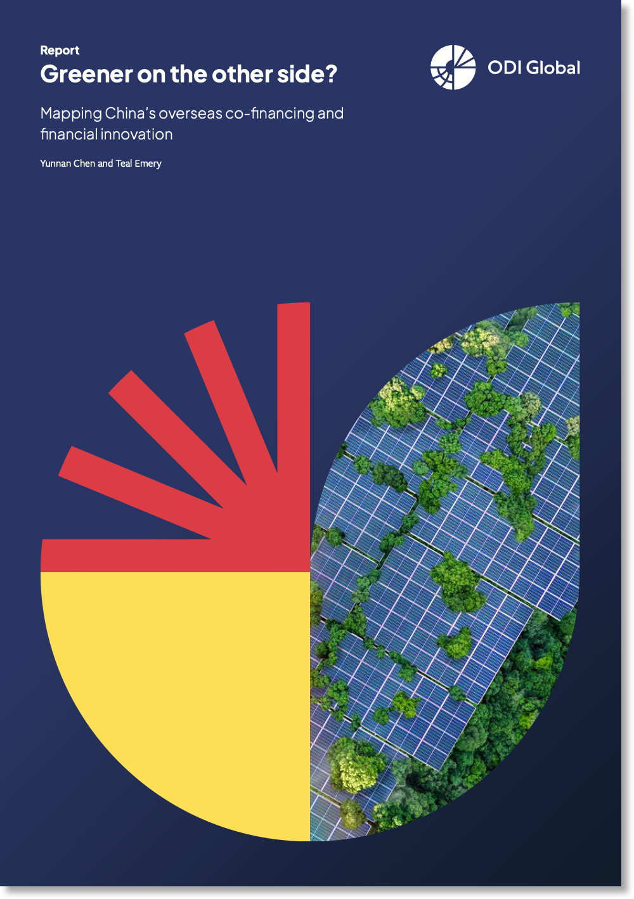
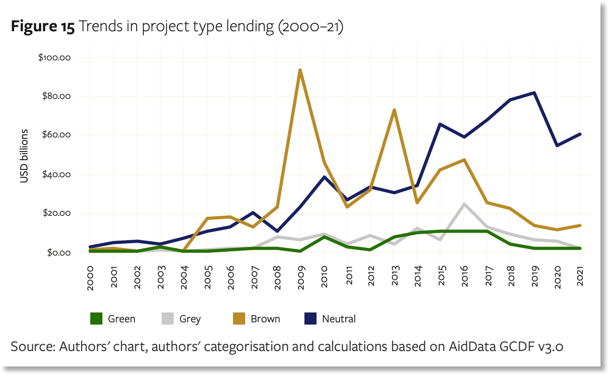
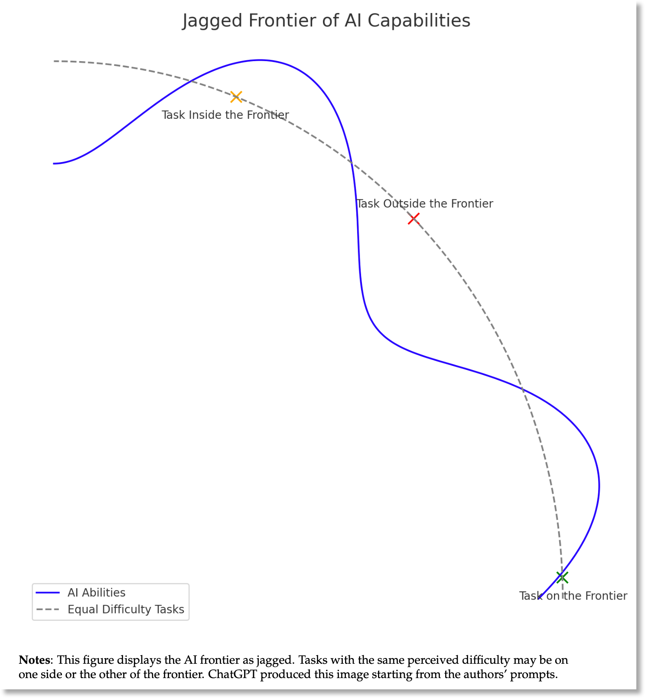
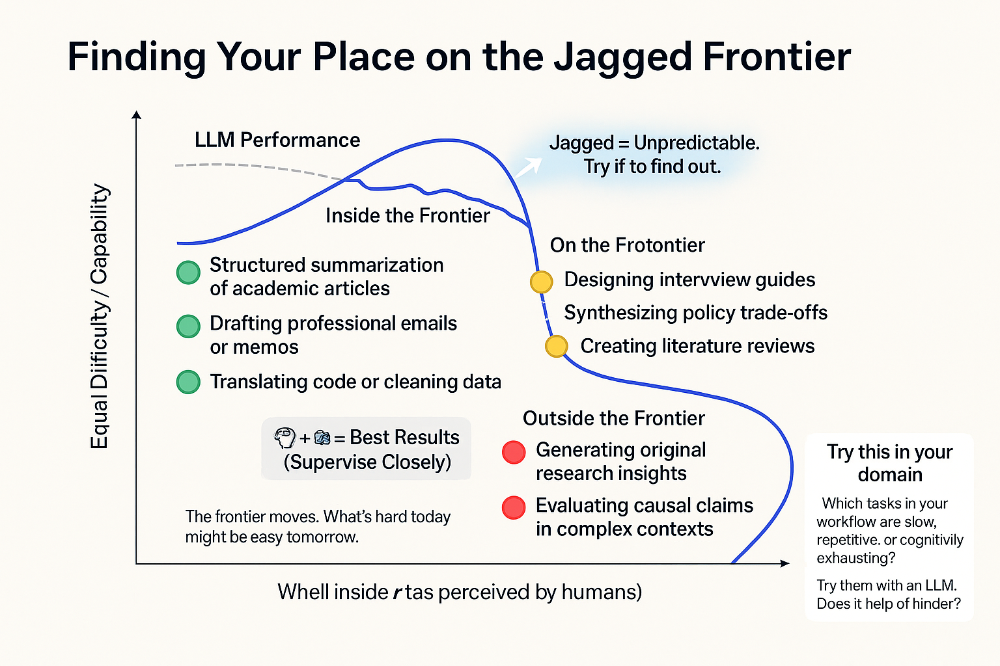

graph LR
A[10 examples<br/>Test concept] --> B[100 examples<br/>Refine approach]
B --> C[300 examples<br/>Validate]
C --> D[18,000 projects<br/>Full scale]
AI for the Skeptical Scholar
Practical Strategies for Using LLMs in Research
Teal Emery
2025-07-15
AI for the Skeptical Scholar
Practical Strategies for Using LLMs in Research
Teal Emery | July 15, 2025
My China Project Story

April 2025: Published “Greener on the other side?”
The challenge: Classify 18,000 Chinese lending projects - 🟢 Green | 🟫 Brown | 🔘 Grey | ⚪ Neutral
Traditional: 1,500 hours, $22,500
Our result: 15 hours, $1.58
Why I’m here: Share practical lessons learned
China’s Green Lending Reality
Despite “Green Belt and Road” rhetoric, minimal renewable energy financing
Key finding: Only 5.8% of Chinese lending went to green projects
The point: This analysis was only possible because LLMs handled the routine classification
Who Am I?
Current roles:
- Founder, Teal Insights (sovereign debt & climate finance)
- Research Consultant, AidData
- Fellow, Energy for Growth Hub
- Adjunct Lecturer, Johns Hopkins SAIS
Relevant experience:
- 7 years as EM sovereign analyst, Morgan Stanley
- Using AI tools daily for research & code development
- Building LLM products for finance ministries
Philosophy: Build in the open, amplify expertise
Real Problems, Real Value
Yes, there are problems ⚠
- Training data bias
- Hallucinations
- Ethical concerns
- Missing context
Despite this… 💡
- Powerful amplifier for good
- Democratizes research capacity
- Frees time for deep thinking
- Enables ambitious projects
My value add: Practical experience on what works (and what doesn’t)
What You’ll Build Today
Three Cumulative Tools
- Professional Context → Foundation for everything
- Enhanced Prompting → Uses context for better results
- Literature Review Gem → Combines both into reusable system
Each builds on the last
Roadmap for Our Journey
Part 1: Mental Model (20 min)
Why AI works this way + strategic thinking
Part 2: Three Cumulative Tools (70 min)
Hands-on practice with immediate applications
Part 3: Scaling Up (15 min)
From web interfaces to APIs - the China case study
Your Next Steps (15 min)
Action planning & Q&A
Your Reference Book
Today’s Workshop
- Core concepts
- Hands-on activities
- Interactive discussion
Companion Book
- Detailed explanations
- Extended examples
- Everything we can’t cover
📖 Full guide: teal-insights.github.io/soas_llm_training
Part 1: Mental Model
Understanding How To Work With AI Effectively
What we’re building: Strategic thinking about AI capabilities
The Research Reality
Information overload is real:
- Too many papers to read
- Cross-disciplinary insights trapped in jargon
- Important work in other languages
- Routine tasks eating research time
💬 Chat: Share one routine task that consumes too much of your time
The opportunity: What if AI could handle the routine so you focus on insight?
Two Ways to Access AI
Web Interfaces (Our focus)
- Browser-based (ChatGPT, Claude, Gemini)
- No coding required
- Interactive conversation
- Best for: Exploration, individual tasks
APIs (Advanced)
- Programmatic access
- Requires coding
- Automated workflows
- Best for: Large-scale projects
Today: Web interfaces | Case study: How APIs enabled our China project
The Jagged Frontier
AI capabilities form an irregular, unpredictable boundary
Key insight from Ethan Mollick’s research:
- Tasks inside frontier: AI excels
- Tasks outside: AI struggles
- The boundary is invisible and shifts
Jagged Frontier in Action
“Paint a dumpster fire in Monet’s style”
“Make a better jagged frontier diagram”

The lesson: You must explore the frontier for YOUR tasks
Low-Hanging Fruit
Where AI consistently saves researchers time:
Literature Tasks 📚
- Summarizing papers
- Finding patterns
- Translation (language & jargon)
- Initial categorization
Coding Tasks 💻
- Data cleaning scripts
- Statistical analysis
- Debugging errors
- Documentation
These are INSIDE the frontier - reliable time-savers
Why Collaborative?
Think of AI as an infinitely patient research assistant
You Provide
- Domain expertise
- Research questions
- Quality judgment
- Ethical framework
AI Provides
- Processing speed
- Pattern recognition
- Multiple drafts
- Tireless consistency
Key principle: AI amplifies expertise, doesn’t replace it
Tool Selection: Why Gemini Today
Three major providers, each with strengths:
- OpenAI (ChatGPT): Best “Deep Research” tool
- Anthropic (Claude): Excellent for coding
- Google (Gemini): Largest context window
Context window = Working memory
- Gemini: ~750,000 words (15 papers)
- Others: ~150,000 words (3 papers)
For academic work: Gemini’s massive context + citations = best choice
What Makes AI Different
Traditional software: Predictable rules, consistent outputs
LLMs: More like a knowledgeable but quirky colleague
- Sometimes brilliant insights
- Sometimes confident nonsense
- Always needs verification
- Success depends on how you communicate
This is why prompting matters - it’s how you communicate effectively
Signpost: From Theory to Practice
You now understand:
✓ Jagged frontier concept
✓ Where AI excels (literature, coding)
✓ Why collaboration works
✓ Tool options
Next: Build your toolkit with three cumulative activities
Part 2: Three Cumulative Tools
Building Your AI Research Toolkit
What we’re building: Practical tools you’ll use immediately
The Foundation: Why Prompting Matters
LLMs are powerful but not clairvoyant
They need:
- Context: Who you are, what you’re working on
- Clear instructions: Specific tasks, not vague requests
- Output format: How you want results structured
- Quality controls: Ways to verify accuracy
Analogy: Like briefing a new research assistant who’s brilliant but knows nothing about your work
Anatomy of Effective Prompts
CONTEXT: Background information, your expertise, project details
TASK: Specific request with clear action verbs
FORMAT: Structure, length, style preferences
CONSTRAINTS: What to avoid, limitations, requirements
QUALITY CONTROLS: "Ask clarifying questions", "Tell me when unsure"Each element improves output quality
Tool 1: Professional Context
The problem: Starting from scratch every conversation
The solution: Reusable professional context that captures:
- Your expertise and background
- Research focus areas
- Communication style
- Methodological preferences
Why this matters: Foundation for all future AI interactions
🔧 Activity 1: Create Your Context
Build Your AI Foundation (8 minutes)
- Go to gemini.google.com
- Upload your CV, bio, or LinkedIn profile
- Use this prompt:
Analyze my professional background and create a 200-300 word
professional context for AI interactions including:
- Domain expertise & background
- Current roles & affiliations
- Research focus areas
- Communication style & audience
- Technical approaches I use
Make it professional but conversational.Activity 1 Walkthrough
Step by step:
- Upload → CV or professional bio
- Paste prompt → Exactly as shown
- Review → Does it capture your expertise?
- Refine → “Make it more concise” or “Add my regional expertise”
- Save → Copy to a document for reuse
Success indicator: AI understands your research domain and communication needs
⏱️ 8 minutes
Checkpoint: What You Built
✅ Professional context that:
- Introduces you to any AI system
- Captures your unique expertise
- Sets appropriate communication style
- Eliminates repetitive explanations
This becomes part of EVERY future prompt
Tool 2: Enhanced Prompting
Now we combine context with structured requests
Without structure ❌ “Help with literature review”
Vague → Generic output
With structure ✅ Context + Task + Format
Specific → Useful output
The magic: Your context + clear structure = targeted assistance
Why Structure Works
Two powerful additions to any prompt:
“Ask me clarifying questions”
- AI seeks missing information
- Prevents assumptions
“Tell me when you’re unsure”
- Reduces hallucinations
- Flags uncertainty
These simple phrases dramatically improve reliability
🔧 Activity 2: Enhanced Prompting
Transform Vague to Powerful (10 minutes)
Build on Activity 1 by adding structure:
Activity 2 Practice
Try it with a real research need:
- Paste your context (from Activity 1)
- Add current research - Be specific, add context, upload documents
- Structure your request - Task, format, constraints
- Include quality controls - Questions and uncertainty
- Compare results - How does this differ from a vague request?
💬 Chat: What surprised you about the enhanced response?
⏱️ 10 minutes
The Compounding Effect
✅ What you’ve discovered:
- Context → No more generic responses
- Structure → Clear, actionable outputs
- Quality controls → Reduced errors
- Together → AI that understands YOUR research needs
Next: Apply this to your biggest time sink - literature review
Tool 3: Literature Review Enhancement
The universal research challenge:
- Explosion of publications
- Relevant work in other languages
- Insights trapped in other disciplines
- No time to read everything
Initial literature review is prime “low-hanging fruit” - squarely inside AI’s capabilities
My Personal Workflow
For every potentially relevant paper:
[Professional context]
Please provide the full citation information for this document at the top, then create a detailed structured summary of this entire document, including any appendices.
I need to understand:
- The main argument or purpose
- Key findings or conclusions
- Important data, evidence, or examples
- Any policy implications or practical applications
- Who the intended audience appears to be
Format this as a structured summary with clear headings.Result: 5% merit deep reading, 95% the summary is sufficient
Two Translation Superpowers
Language Translation 🌍
- Spanish economics paper → English
- Chinese policy document → English
- Initial assessment of relevance
Jargon Translation 🔄
- Economics → Plain English
- Computer science → Social science
- Technical → Policymaker-friendly
Both expand your research scope dramatically
Cross-Disciplinary Example
[Your context]
This computer science paper uses unfamiliar technical terminology.
Please:
1. Identify the main contribution in plain language
2. Explain how their methods might apply to social science research
3. Highlight any useful techniques for [your research area]
Focus on practical applications, not technical details.Unlock insights from other fields
Gems: Your Reusable Assistants
What are Gems?
- Saved AI configurations with your instructions
- Reusable across conversations
- No need to re-enter context
- Continuously improvable
Think of it as: Training a specialized research assistant who remembers your preferences
🔧 Activity 3: Build Literature Gem
Create Your Research Assistant (25 minutes)
Part A: Test & Refine (10 min)
- Upload a paper
- Apply context + literature prompt
- Identify what to improve
Part B: Create Gem (15 min)
- Combine all your learning
- Save as reusable tool
- Test on new paper
This combines everything you’ve learned
Literature Gem Template
# Literature Review Assistant - [Your Name]
[Your professional context from Activity 1]
## Your Role
Help me efficiently analyze papers in [your field], identifying
insights relevant to [your research focus].
## For every document:
- Full citation
- Main argument + theoretical framework
- Methods and evidence
- Key findings with page numbers
- Implications for [your specific interests]
- Connections to other disciplines
## Quality Standards
- Distinguish claims from evidence
- Note limitations and biases
- Flag surprising or controversial points
- Suggest related papers if mentionedActivity 3 Step-by-Step
Part A: Test the workflow
- Upload paper to Gemini
- Use context + summary prompt
- Evaluate: What’s missing? Too detailed? Just right?
Part B: Create your Gem
- Go to Gemini → Explore Gems → New Gem
- Name clearly: “Literature Review - [Your Field]”
- Paste refined instructions
- Save and test with different paper
⏱️ 25 minutes
The Cumulative Power
✅ You’ve built a complete system:
- Context → AI understands you
- Structure → Clear, useful outputs
- Gem → Reusable, improving tool
Each element reinforces the others
You now have a literature review assistant tailored to YOUR research
Signpost: Literature to Coding
Literature review = Low-hanging fruit #1
Coding assistance = Low-hanging fruit #2
Both save massive time on routine tasks
Coding: The Other Major Time-Saver
Who this helps:
- Researchers who code (R, Python, Stata, SPSS)
- Those who supervise coders
- Excel users wanting reproducible workflows
The opportunity: AI as infinitely patient coding tutor and assistant
The Coding Jagged Frontier
AI Excels At ✅
- Data cleaning code
- Standard analyses
- Debugging errors
- Writing documentation
- Translation between languages
AI Struggles With ❌
- Your specific data quirks
- Complex architecture
- Domain-specific packages
- Performance optimization
- Statistical method selection
Success key: You provide research logic and context, AI handles syntax
The Promise and The Peril
Promise 🚀
- 10x faster for routine tasks
- Learn new languages quickly
- Better documentation
- Fewer silly errors
Peril ⚠️
- “Vibe coding” - looks right, runs wrong
- Hallucinated functions
- The 0-to-90% problem
- Overconfidence in output
Critical: You need to understand your code. Always validate results.
What is “Vibe Coding”?
The dangerous phenomenon where:
- Code looks professional ✓
- Runs without errors ✓
- Produces wrong results ✗
Example: Statistical test that always returns p < 0.05
Protection:
- Test with known data
- Verify calculations manually
- Check package documentation
Best Practices for Research Coding
- Use advanced models - Claude for coding, worth the $20/month
- Provide complete context - Data structure, expected output
- Work iteratively - Build step by step, test each part
- Include your preferences - “Use tidyverse style with base R pipe”
- Always validate - Check against known results
Effective Coding Prompts
[Your context including preferred languages/packages]
I have survey data with columns: household_id, income, education,
region, year. The data has some missing values.
Using R with tidyverse style and base R pipe |>, please:
1. Create a script to calculate and visualize median income by region and education
2. Create plots to help me understand how to handle missing data appropriately
4. Include comments explaining each step
Note: I prefer functional programming (purrr) over loops.Advanced Coding Tools
When you’re ready for more:
Cursor
- AI-native IDE
- Edits code in place
- Understands whole project
GitHub Copilot
- Autocomplete on steroids
- Works in your IDE
- Learns your patterns
Start with chat interfaces, graduate to these when ready
Signpost: From Tools to Scale
You now have:
✓ Mental model (jagged frontier)
✓ Three practical tools
✓ Understanding of low-hanging fruit
Next: What becomes possible at scale
Part 3: Scaling Up
From Web Interfaces to APIs
What we’re exploring: How these tools enable ambitious research
Back to China: The Full Challenge
Research question: Given policy chatter about the “Green Belt & Road,” what do we know about China’s role in funding the energy transition in developing countries?
The data: 18,000 lending projects needing classification
- 🟢 Green: Solar, wind, hydro, nuclear
- 🟫 Brown: Coal, oil, fossil fuels
- 🔘 Grey: Mixed/indirect (transmission lines)
- ⚪ Neutral: Non-energy
The constraint: Ambitious project, limited budget
Web Interface vs API Approach
What you’ve learned 🖥️
- Manual chat interface
- One document at a time
- Great for exploration
- No coding required
What we used 🔧
- Programmatic API
- Thousands automatically
- Systematic processing
- Required Python or R
Same AI, different access method
The Scale Mathematics
Manual Classification
1,500 hours × $15/hour = $22,500
Our API Approach
15 hours × $0.11/hour = $1.58
100x faster, 14,000x cheaper
Why Context Beat Keywords
Real example: “500MW solar power plant with backup diesel generator”
Keyword approach ❌
- Searches for “diesel”
- Classifies as brown
- Misses primary purpose
LLM approach ✅
- Reads full description
- Understands context
- Correctly identifies as green
This is the jagged frontier in action
Our Development Journey
Key insight: Start small, validate early, scale confidently
Validation: The Critical Step

Our approach:
- Test multiple models
- Human validation sample
- 91.8% agreement
- Full methodology published
Transparency enables trust and progress
What We Discovered
China’s green lending: mostly hydro, minimal solar/wind
Only possible through scale - patterns invisible in small samples
Lessons for Your Research
- Start where you are - Web interfaces are powerful enough for most tasks
- Think about scale - What questions could you ask with unlimited processing?
- Validation is everything - Build it in from the start
- Share your methods - We all benefit from transparency
- Perfect < Good enough - 92% accurate on 18,000 beats 100% on 100
When to Consider APIs
Stay with web interfaces when:
- Exploring and learning
- Need flexibility
- Not a confident R or Python programmer
Consider APIs when:
- Processing a large number of items
- Repeating same analysis
- Need systematic approach
- Have strong coding skills or coding support
Most research stays in the first category
The Bigger Opportunity
Not about technology
About democratizing ambitious research
About freeing you for high-value thinking
You now have the tools
Your Next Steps
From Workshop to Practice
What You Built Today
✅ Mental Models
- Jagged frontier
- Collaborative approach
- Low-hanging fruit identification
✅ Three Tools
- Professional context
- Enhanced prompting
- Literature review Gem
✅ Understanding of scale
You’re ready to start integrating AI into your research
This Week’s Action Plan
Choose 2-3 that fit your current work:
- Test your Literature Gem on 5-10 papers
- Create a second Gem for grant writing or another task
- Try coding assistance if you use R/Python/Stata
- Upload a document collection to NotebookLM
- Share one success with a colleague
💬 Chat: Which actions match your immediate needs?
Going Deeper: Resources
Your reference book: teal-insights.github.io/soas_llm_training
Essential reading:
- Ethan Mollick’s “One Useful Thing” - I’ve found Mollick’s book, blog, and papers helpful
- Our ODI methodology - Detailed validation approach
Stay connected:
- Email: lte at tealinsights.com
- Share what works (and what doesn’t)
Final Thoughts
Remember:
- Start small, validate always
- Use AI for routine tasks
- Keep your critical thinking
- Share your learnings
The opportunity: More ambitious research while maintaining rigor
The tools: You now have them
Thank You
Your skepticism is an asset—keep it
Your expertise is irreplaceable—amplify it
Your research matters—let AI help you do more
Questions & Discussion
SOAS Faculty Workshop • Detailed Guide: teal-insights.github.io/soas_llm_training